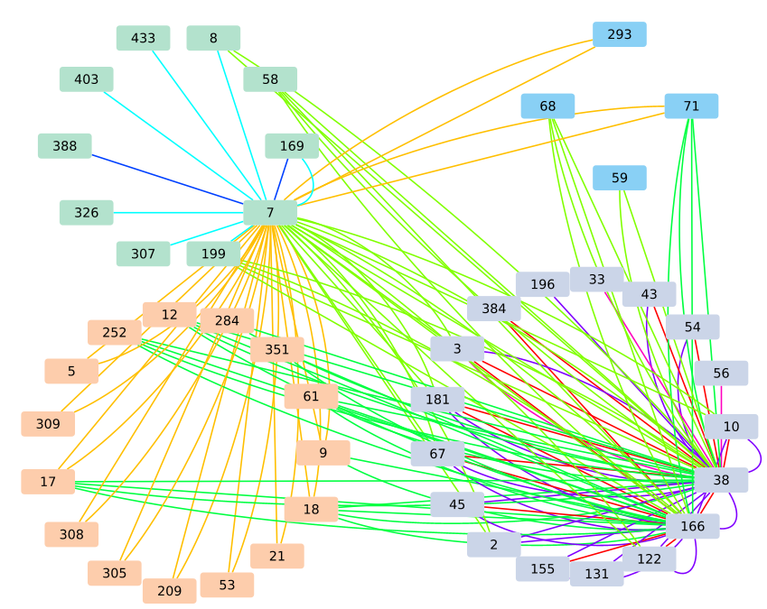

Tutorial¶
Commands for a quick working example in the python console:
import multixrank
multixrank.Example().write(path="airport")
This generates a working example based on the “airport” multiplex:
`-- airport
|-- bipartite
| |-- 1_2.tsv
| |-- 1_3.tsv
| `-- 2_3.tsv
|-- config_minimal.yml
|-- multiplex
| |-- 1
| | |-- FR26.tsv
| | |-- FR3.tsv
| | |-- FR3_2.tsv
| | `-- FR7.tsv
| |-- 2
| | |-- UK15.tsv
| | |-- UK26.tsv
| | `-- UK3.tsv
| `-- 3
| |-- G1.tsv
| |-- G24.tsv
| `-- G6.tsv
`-- seeds.txt
The minimal configuration file ‘config.yml’ looks like this.
multiplex:
1:
layers:
- multiplex/1/FR26.tsv
- multiplex/1/FR3.tsv
- multiplex/1/FR7.tsv
2:
layers:
- multiplex/2/UK15.tsv
- multiplex/2/UK26.tsv
- multiplex/2/UK3.tsv
3:
layers:
- multiplex/3/G1.tsv
- multiplex/3/G24.tsv
- multiplex/3/G6.tsv
bipartite:
bipartite/1_2.tsv:
source: 1
target: 2
bipartite/1_3.tsv:
source: 1
target: 3
bipartite/2_3.tsv:
source: 2
target: 3
seed:
seeds.txt
import multixrank
multixrank_obj = multixrank.Multixrank(config="airport/config_minimal.yml", wdir="airport")
ranking_df = multixrank_obj.random_walk_rank()
multixrank_obj.write_ranking(ranking_df, path="airport_ranking.tsv")
multixrank_obj.to_sif(ranking_df, path="airport_seed7_top3.sif", top=3)
This runs the software and writes the results here:
$ head -n 4 airport_ranking.tsv
multiplex node score
1 7 0.24984265999565775
3 166 0.0038198804520776
3 38 0.0037597000889303313
The SIF file with the sub-network that includes the top 3 nodes can be opened and visualized in Cytoscape as in the following figure:
{kind=link}